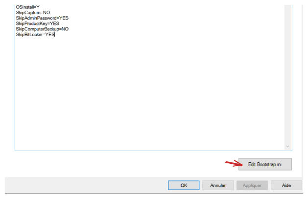

MDT
Télécharger MDT : https://www.microsoft.com/en-us/download/details.aspx?id=54259
Télécharger ADK : https://support.microsoft.com/fr-fr/windows/adk-download-for-windows-10-2a0b7ff2-79b7-b989-f727-43ae506e36ad
Installer le ADK, en choisissant ces modules.

Aller dans le menu démarrer, Microsoft Deployment Toolkit pour trouver Deployment Workbench

Faire un clic droit sur Deployment Shares puis cliquer sur Deployment Share.

Choisir un dossier de destination sur un autre disque que le C.

Spécifier le chemin réseau de partage.

Continuer et finir la création.
On crée ensuite un utilisateur pour gérer le MDT
# Spécifier le nom et le mot de passe du compte de service
$ServiceAccountName = "Service_MDT"
$ServiceAccountPassword = ConvertTo-SecureString "P@ssword123!" -AsPlainText -Force
# Créer le compte local
New-LocalUser $ServiceAccountName -Password $ServiceAccountPassword -FullName "MDT" -Description "Compte de service pour MDT"
# Ajouter les droits en lecture sur le partage
Grant-SmbShareAccess -Name "DeploymentShare$" -AccountName "Service_MDT" -AccessRight Read -Force
# Attribuer au compte de service les permissions nécessaires pour accéder aux fichiers de déploiement MDT
$MDTSharePath = "\\$env:COMPUTERNAME\DeploymentShare$"
$Acl = Get-Acl $MDTSharePath
$Rule = New-Object System.Security.AccessControl.FileSystemAccessRule("Service_MDT","ReadAndExecute", "ContainerInherit, ObjectInherit", "None", "Allow")
$Acl.SetAccessRule($Rule)
Set-Acl $MDTSharePath $AclPour importer un système d'exploitation, on fait un clic droit sur Operating Systems puis on clique sur Import Operating System

Choisir Full Set of source files
On choisit ensuite le disque d'installation de Windows 10

Finir l'ajout.
Supprimer les versions de Windows que l'on ne souhaite pas garder.

Faire un clic droit sur Task Sequences puis cliquer sur New Task Sequence.

Donner un ID et un nom à la séquence de tâches.

Sélectionner l'OS à installer puis choisir Do not specify a product key this time.

Donner un nom d'organisation, puis continuer et entrer un mot de passe.

Finir la création de la séquence de tâches.
Faire un clic droit sur la séquence de tâches puis Propriétés pour pouvoir la modifier.

Faire un clic droit sur le déploiement, puis cliquer sur propriétés et aller dans l'onglet Rules.

On peut ici modifier certains paramètres.
Cliquer sur le bouton Edit Bootstrap.ini

On ajoute les informations suivantes dans le fichier
DeployRoot=\\WIN-DC\DeploymentShare$
UserID=Service_MDT
UserPassword=P@ssword123!
UserDomain=tssr.local
SkipBDDWelcome=YES
KeyboardLocalePE=040c:0000040cPour créer l'image de déploiement, faire un clic droit sur le Deployment Share puis cliquer sur update Deployment Share.
Laisser les valeurs par défaut et finir la génération de l'image.
Retourner dans WDS et ajouter une nouvelle image de démarrage.